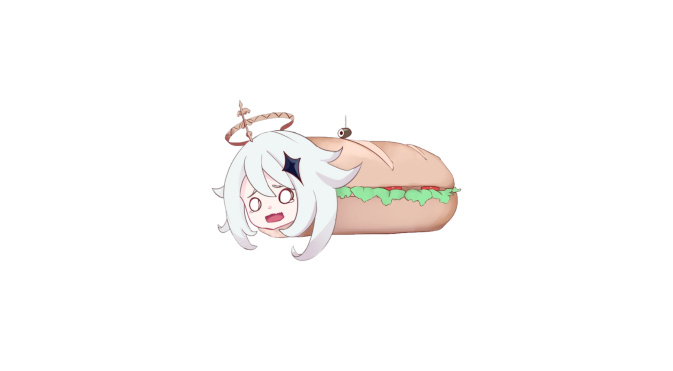
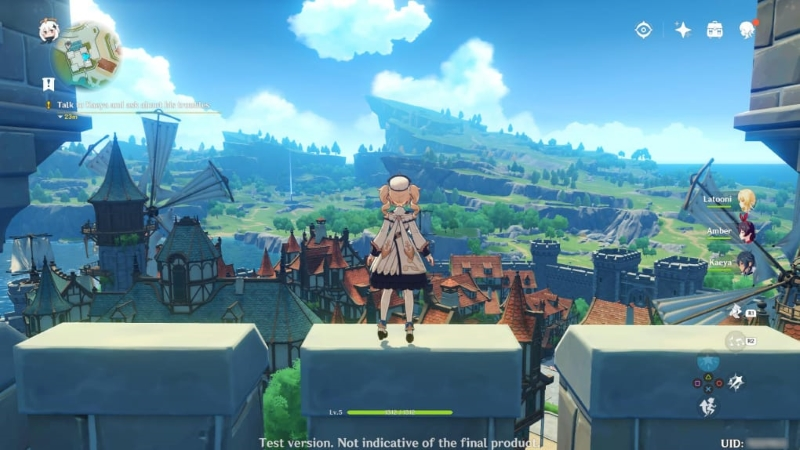
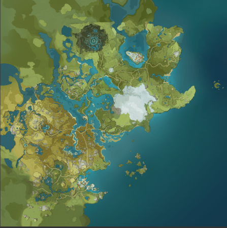

Système du Jeu
| Généralités
Le jeu propose une carte du monde ouverte avec divers terrains, que le joueur peut explorer en marchant, en escaladant, en nageant et en planant. De nombreux objets et lieux importants sont répartis sur toute la carte4. Le joueur peut contrôler jusqu'à quatre de ses personnages à la fois. En accomplissant des quêtes pour faire progresser dans l'histoire, le joueur a la possibilité de déverrouiller jusqu'à 30 personnages jouables. Chaque personnage possède deux compétences de combat uniques : une compétence normale et une compétence spéciale. La compétence normale peut être utilisée à tout moment, mais est sujette à un délai de récupération après utilisation, alors que la compétence spéciale a un coût en énergie, obligeant le joueur à accumuler d'abord suffisamment d'énergie élémentaire5. La cuisine est un autre aspect important du système de jeu de Genshin Impact. Le joueur peut collecter des ressources diverses et variées tout au long de son aventure, dont certaines peuvent être utilisées pour préparer des plats. Certains plats permettent de restaurer la santé des personnages ou de les ressusciter, tandis que d'autres augmentent les capacités offensives ou défensives. |
|
|  |  | Système d'éléments
Une des caractéristiques qui rend le jeu unique est le Système d'Éléments. Sept types d'éléments sont disponibles, à savoir le vent (Anémo), le feu (Pyro), la foudre (Electro), l'eau (Hydro), la glace (Cryo), l'énergie de la forêt (Dendro) et la terre (Géo). Les joueurs doivent tirer parti des synergies élémentaires, pour tuer des monstres ou accomplir des quêtes. Par exemple, les compétences de feu peuvent permettre de réduire en cendres le bouclier en bois de l'ennemi. Les compétences de glace peuvent être utilisées pour geler l'eau et ainsi traverser plus facilement une rivière. |
| |
|
Système Multijoueur
Genshin Impact possède aussi un mode multijoueur débloqué à partir du niveau 16 d'aventure, jusqu'à 4 joueurs peuvent rejoindre maximum. - à 2 joueurs : chaque joueur peut jouer avec 2 personnages en même temps. - à 3 joueurs : chaque joueur peut jouer avec 1 personnage en même temps, sauf l'hôte de la partie qui en joue 2. - dès 4 joueurs : chaque joueur peut contrôler qu'un seul personnage à la fois. | |